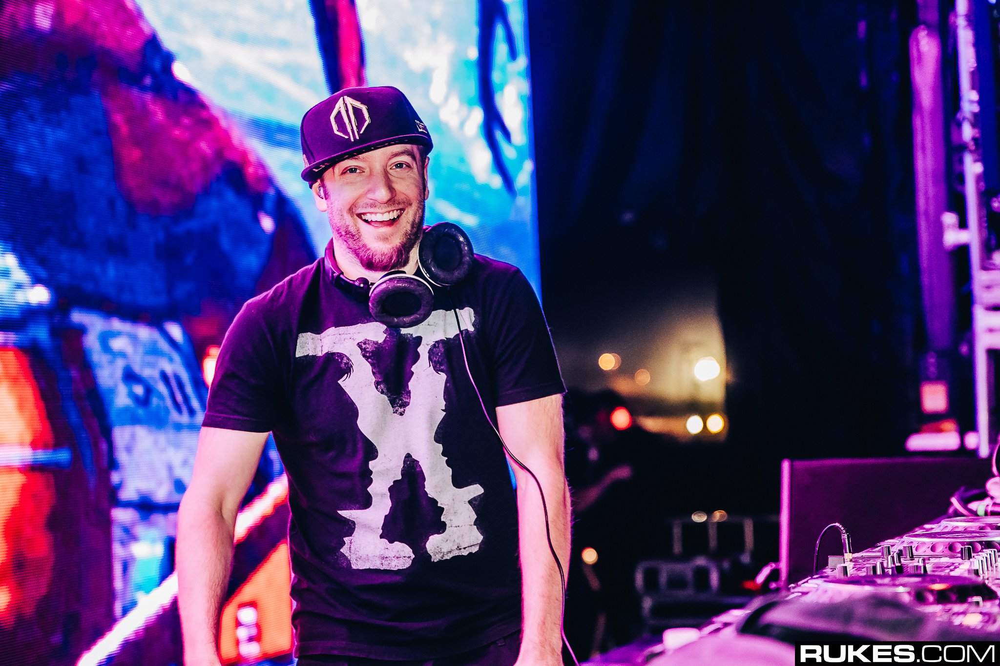

- Illenium
- San Holo
- Excision
Excision

Jeff Abel, (born 29 April 1986) better known by his stage name Excision, is a Canadian producer and DJ. He frequently works with fellow Canadian dubstep producers Datsik and Downlink, along with producer Dion Timmer, hailing from the Netherlands. He is the founder of Rottun Recordings. Active since 2006, his first release was in 2007. He released an annual "Shambhala" mix album in the third quarter of each year up until 2016, where he started his own Music Festival (Lost Lands) the following year and releases annual mixes.[1] A producer of dubstep, drum, bass, and breakbeat, Excision is known for his dark, bass-heavy sounds created using bass and drums, the aggressiveness of metal, and hip-hop vibes.[2] He is also known for his tours with immense sound systems and huge visual productions.[3]
Abel founded the record label, Destroid Music. Upon its debut, Destroid Music released a full-length digital album. The majority of tracks on the album were produced by Excision, with collaborations with other artists such as Downlink, Space Laces, Far Too Loud, Bassnectar. and Ajapai. Destroid is a dubstep supergroup and Abelton live band consisting of Excision, Downlink and KJ Sawka. Destroid is well known for their futuristic robot suits, heavy apocalyptic sounds, and visual productions and MIDI instrument use.